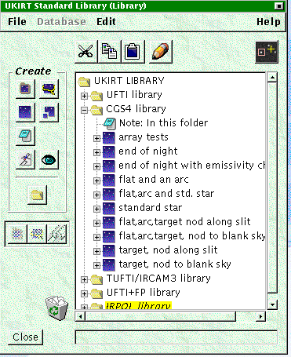

symbol,
and each observation has a label which is a one line summary of what
it does.
symbol,
and each observation has a label which is a one line summary of what
it does.
To open a library click on "File" on the menu bar and choose the UKIRT-Template library. This will open a window with the library displayed in it:

There is a folder of templates for each UKIRT instrument in the
library, and in this example the folder of CGS4 templates is open. An
observation is indicated by the symbol,
and each observation has a label which is a one line summary of what
it does.
If you are familiar with Windows-NT or 95/98 the look of the expanded "tree" showing the program should be familiar. The small "-" sign next to the "Open folder" item in the display indicates that its components are shown in expanded form below it. If you click on the "-" the expanded list collapses "into the folder"; and the symbol next to it changes to a "+" sign. Clicking on the "+" expands the list again. The same is true of the "+" signs next to the observation symbols. The example below

shows an UFTI 5 point jitter pattern type observation expanded. Note how the dotted vertical lines join items at the same level in the hierarchy.
All the contents of an Observation, as it is currently used at UKIRT
are shown in the example :
 : An observation component such as an
instrument configuration (labelled UFTI above), or Coordinates
(labelled Target List), or DRRecipe selection (labelled with the
recipe name).
: An observation component such as an
instrument configuration (labelled UFTI above), or Coordinates
(labelled Target List), or DRRecipe selection (labelled with the
recipe name).
 : Iterators - defining the
overall sequence, the number of repeats, and the telescope offsets to
be used. There could also be an iterator for filter changes, although
this example does not contain any.
: Iterators - defining the
overall sequence, the number of repeats, and the telescope offsets to
be used. There could also be an iterator for filter changes, although
this example does not contain any.
 : Observe Iterators which specify the
type of observation to obtain : Dark, Observe (target), Sky, Flat, Arc, Bias,
how many, and for Darks, Flats and Arcs whether or not the exposure time is
the same as in the instrument component defined earlier in the hierarchy.
: Observe Iterators which specify the
type of observation to obtain : Dark, Observe (target), Sky, Flat, Arc, Bias,
how many, and for Darks, Flats and Arcs whether or not the exposure time is
the same as in the instrument component defined earlier in the hierarchy.
Before each item in the Observation there is a note  , which provides documentation about what the
following item does and how to use it.
, which provides documentation about what the
following item does and how to use it.
Open the appropriate folder in the Library. It is easiest to copy Observations when they are collapsed. Move the yellow highlight to the one you want by clicking on it with the left mouse button. You can drag a copy across into your own program by keeping the mouse button pressed and dragging, or you can highlight it and click on the copy icon, or on copy under "edit" and then select paste in your science program window.
Items are always pasted below the one with the highlight.
If you try to paste an observation into the wrong place there will be an error message. If you are using "drag" to copy an item then when your cursor is in the right place to "drop" it the OT will display a small arrow indicating where it will go. (explicit copy and then paste is probably easier).
Once you have copied a template observation, expand its heirarchy. To edit the contents of an item "double click" on it - a second window will open which displays the contents and allows you to edit them. By double clicking on a note, you can see its contents. The templates in the library are intended to be self documenting via the notes, which contain helpful information about the item. For example :

Your support scientist will provide advice about which library templates are most appropriate, and a tutorial about how to use the OT.
When you edit an instrument component to change the instrument
configuration this change will not be inherited by components
such as a "Dark" or "Flat". To ensure that your darks, flats and arcs
are correctly setup you must open these components in your copy of the
template and click on the Defaults button. . In the
case of a dark this will set the dark onchip exposure time to be the
same as that for your source, and in the case of a flat or an arc it
will set to the recommended lamp and exposure time for the grating and
wavelength you have chosen.
If you are making many similar observations of different sources, then
once you have edited a template copy to create the first Observation with your details, then you can copy and
paste it to create others in which you only need to change the
coordinates. If you change coordinates and exposure times for each
source remember to use the default button to update the darks as well
!
You can save copies to local disk using the "file" menu on the Science Program window, and its a good idea to do this frquently. The conventional ending for the file name is ".ot", but this is not enforced. It is recommended that you do this frequently.
Its a good idea to give your Observations a clear and memorable name. (e.g. NGC1068_JHK_UFTI). The ORAC-OM will present you
with a list of your Observations, showing the names, from which you select which one to do next. Although you can browse the contents of an Observation with the OM its much
easier to have a name that helps you remember which is which.
Tips for using the position editor are in the separate document describing these.
When you have finished editing your science program send it to the UKIRT database : Log into the database using your user-id and password using the database item on the OT desktop. Then use the database button on your science program
window to send it. If you make changes later you can resend it.
Original : 1999/09/05, Last Modification Date 2000/08/04 - Last Modification Author:Gillian Wright